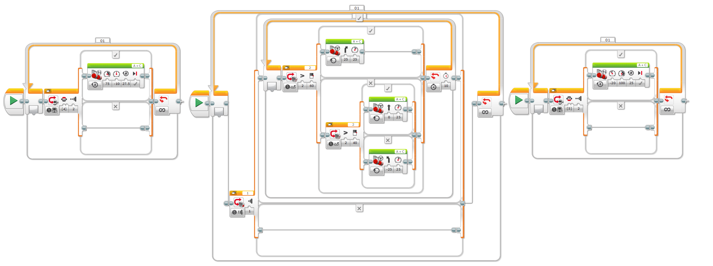
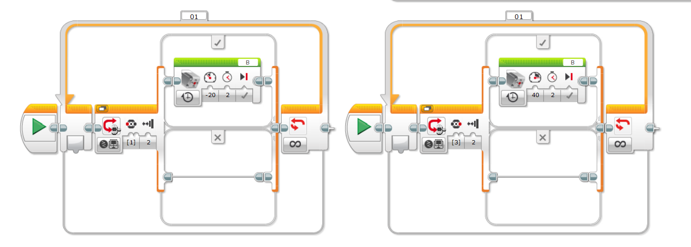
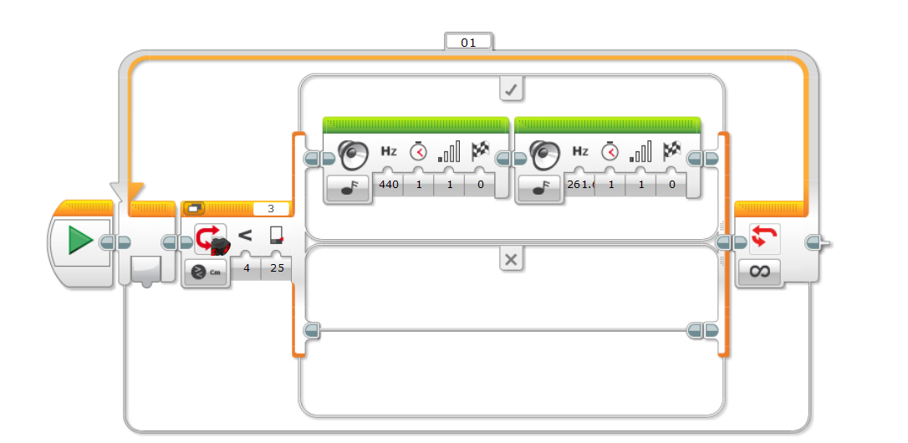

Construct a logical plan, which describes the efficient use of time and resources, sufficient for peers to be able to follow to create the solution. Follow the plan to create the solution, which functions as intended.
Fully justify changes made to the chosen design and plan when making the solution.
The robot was tested on the Lego Mindstorm Ev3 track. When testing the robot, there was a problem where the robot struggled to turn. This is because the speed of the motor was not powerful enough to support the robot’s weight when turning. This problem was solved by setting the speeds of the front wheels three times that of the speed of the back wheels. The reason the speeds were changed was to respect the concept of angular momentum.
Present the solution as a whole, either: in electronic form, or through photographs of the solution from different angles, showing details.
Our Robot:
Front view:
Side view:
Top view:
The Line Sensor:
The Claw:
The Proximity Sensor:
This section of the code allows the robot to follow the line, as well as it being able to turn right and left.
This section of the code allows the claw to open and close.
This section of the code allows the robot to sense objects in front of itself and inform the operator through an alarm.
